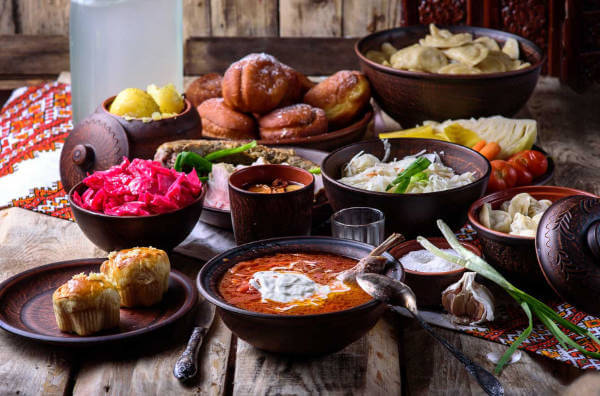
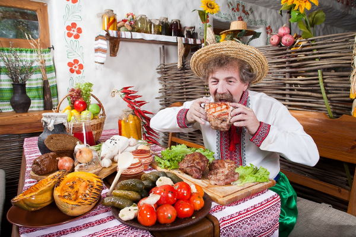

З яким словом у вас асоціюється українська кухня? Всі ці пишні пампушки, ароматне сало, соковите м’ясо з печі, картопля з зеленню, що парує … Смачна, ситна, цікава, самобутня … Все це вірно, але не дозволяє до кінця сформувати уявлення про українську кухню. Щедра – ось найбільш точне слово для неї. Столи, які ломляться від домашніх страв і закусок, ледь гість переступить поріг будинку господині, відповідні оригінальні рецепти до кожного свята. Млинці на Масляну, 12 страв на Різдво, яблучні пироги в честь свята Спаса. І це лише мала частина святкових українських традицій. Українська кухня ситна і різноманітна. В її основі лежать м’ясо, зокрема, свинина, сало, різноманітні овочі. І ще одна візитна картка української кухні – це випічка та вироби з тіста. Історія України дуже багата. І вона знайшла відображення в кулінарії. Українці завжди займалися сільським господарством, працювали на полях і городах. Страви, які готували сім’ї, були з того, що було під рукою. Вони були наваристими, поживними і часто навіть жирними, щоб наповнити людей силами і витривалістю.
Українську кухню люблять у всьому світі. Особливо, її фірмові страви. Звичайно ж, це борщ, вареники, сирники, пампушки, копчене або солоне сало. Основні способи приготування – це відварювання і запікання. Справа в тому, що з давніх-давен головним атрибутом для приготування їжі була піч. У ній варили каші, картоплю, борщі, тушкували м’ясо і випікали хліб. Навіть перебуваючи в степу, козаки або мисливці, піймавши рибу або підстрелив дичину, варили з неї бульйони і юшки, а не смажили над багаттям. Через те, що Україна часто перебувала в стані завоювання різними народами, то в українську кухню перекочували деякі традиції сусідніх країн. Так, наприклад, від татар і турків в українську кухню прийшло обсмажування у великій кількості розпеченого масла, а від німців використання подрібненого рубленого м’яса. Також характерним для української кухні є використання часнику. З ним печуть пампушки і хліб, додають в борщ, їм шпигують сало і м’ясо. У 19ст в українську кухню увійшли баклажани і помідори, які раніше вважалися їжею іноземців, а також буряк. Завдяки цьому з’явилися ті рецепти, які ми любимо й до цього дня.
 В нашій країні дуже рано проявилася професія кухаря як окреме ремесло. Ще при перших монастирях були певні монахи, які займалися виключно приготуванням їжі. Пізніше такі кухарі з’явилися і в будинках заможних сімей, і у знаті. Саме завдяки такому розподілу праці формувалася багата і різноманітна українська кухня. Готування їжі перетворилося на справжнє ремесло, яке розвивалося, удосконалювалося і перетворювалося в мистецтво. Завдяки монахам-кухарям з’явилося безліч традиційної релігійної випічки і святкових рецептів. Незважаючи на різноманітність домашньої худоби, а також дичини і риби в лісах і річках, м’ясні страви вважалися святковими. У звичайні дні подавали страви з овочів, тіста і молочних продуктів. Саме тому овочеві страви і різноманітна випічка так сильно розвинені в українській кухні. Рецепти з овочів включають в себе велику кількість інгредієнтів, завдяки чому є дуже смачними й незвичайними. Також окреме місце в українській кухні займає картопля. Її відварюють, запікають з салом, подають зі шкварками або зеленню, з нею готують пироги та вареники, деруни, зрази. Вона, нарівні з хлібом і кашами, є одним з головних гарнірів в українській кухні.
• Борщ
• Вареники з різними начинками
• Холодець
• Пампушки
• Галушки
• Картопля відварна або печена
• Вергуни (аналог хмизу)
• Печеня
• Домашня ковбаса
• Деруни
• Млинці (налисники)
• Січеники
• Сало солоне
• Закуски з сала
Багатством відрізняються не тільки страви української кухні, а й напої. Серед них всілякі узвари – корисні і солодкі компоти із сухофруктів або ягід. До речі, узвар також є традиційним представником різдвяного столу. Дуже популярні в українській кухні напої, які виходять шляхом бродіння – квас, меди, пиво. З тих пір, як в Україні прижився буряк, цукор став невід’ємною частиною кулінарії. Збільшився асортимент не тільки десертів, але і напоїв. Горілка, наливки, варенуха, вино і різні настоянки подаються на багатий український стіл в такому ж достатку, як і страви. Не дарма українська кухня так популярна в усьому світі. Вона щедра, багата, різноманітна. У кожному рецепті відчувається українська душа, відображається наш менталітет і гостинність, сердечне тепло, з яким в українців прийнято зустрічати гостей. Якщо ви ще цього не зробили, то вам потрібно обов’язково познайомитися ближче з українською кухнею. Вона варта того! Спробувавши національні страви, ви не зможете їх забути, і назавжди збережете в собі частинку українського тепла і привітності разом з нашими традиційними рецептами!
Ця страва – символ української кухні, перша і єдина, яка уже на розгляді в ЮНЕСКО, щоб бути включеною в список Нематеріальної культурної спадщини України. Саме його, згідно опитуванням, більшість українців вважають улюбленою стравою національної кухні. До речі, так думають не тільки українці: CNN включили борщ до 20 найсмачніших супів у світі! Хоча вважається, що найбільш поширеним борщ є в Північних та Центральних регіонах, насправді готують його скрізь. Класичний борщ складається з близько 30 інгредієнтів! Серед них найголовніші: буряк, капуста, картопля, морква, цибуля, яловичина та томатна паста. Але в залежності від регіону рецепти можуть різнитися. Наприклад, на Поділлі додають квасолю, на Півдні – борошно, на Слобожанщині – пиво, у київський борщ – хлібний квас. Є зелений борщ, червоний, грибний, холодний. Усього понад 70 видів! Їли борщ зазвичай не з хлібом, а з пампушками з часником. Цікавий факт: наші предки навіть надавали борщу сакрального значення, бо думали, що з його парою відлітали до раю душі небіжчиків. Тому борщ був обов’язковою стравою на поминальних обідах. Фестивалі борщу регулярно проводять у кожному регіоні України.